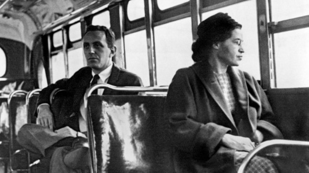

Rosa Parks Rosa Parks tornou-se o pivô do boicote aos ônibus de Montgomery, o qual acabou com a lei de segregação racial dos transportes públicos da cidade. Na década de 1950, muitas cidades norte-americanas mantinham esta lei, a qual dividia os assentos entre “brancos” e “pessoas de cor”, termo utilizado na época para se referir a afrodescendentes. Em 1955, Rosa Parks se negou a ceder o seu assento para um branco e foi presa. O caso repercutiu no boicote que durou 381 dias, tendo a comunidade negra se negado a usar o transporte até que a segregação fosse encerrada.